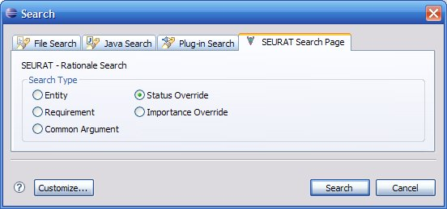

SEURAT has the ability to locate status overrides which have been made to the Rationale Task List. A status override prevents errors and warnings caused by rationale status conflicts from being displayed in the task list. To search for status overrides locate the SEURAT Search Page from the Eclipse search window. Select the Status Override radio button to indicate the search type. Click the search button to execute the query.

The results of the status override query will be placed in the Eclipse search view. Each overridden status element will be displayed as row in the table with some other information helping to identify it. Double clicking on any row in the search results will open the rationale element associated with the status override to open in an editor. Additional actions are available by right clicking on a selected row in the search results.